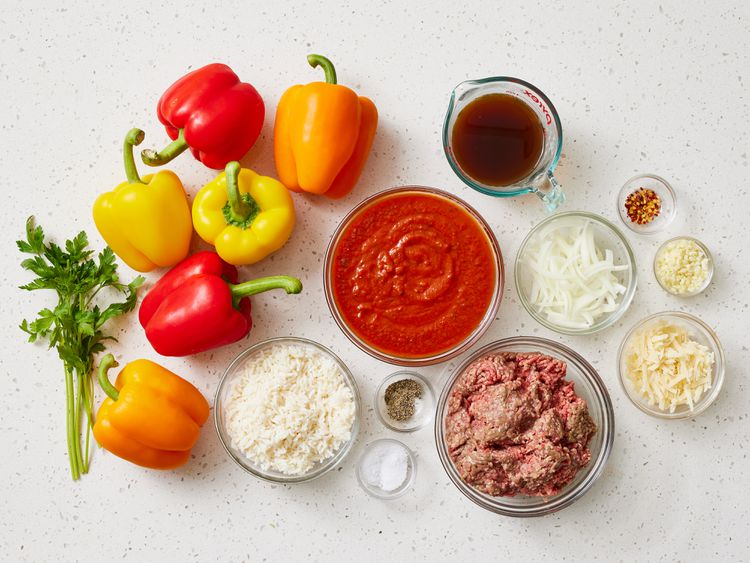
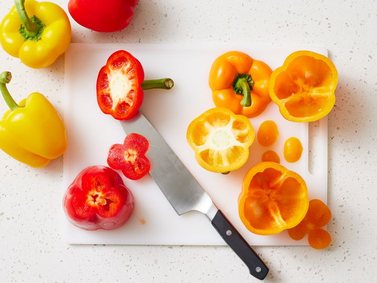
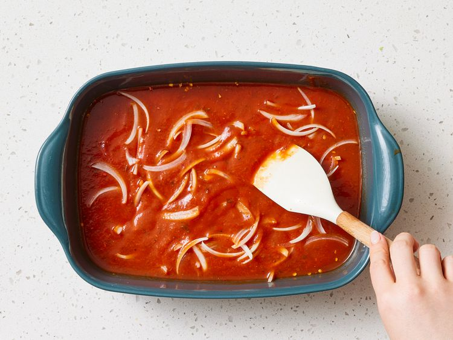
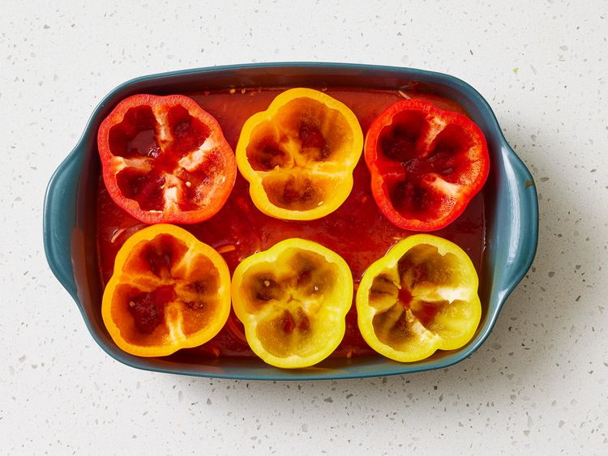
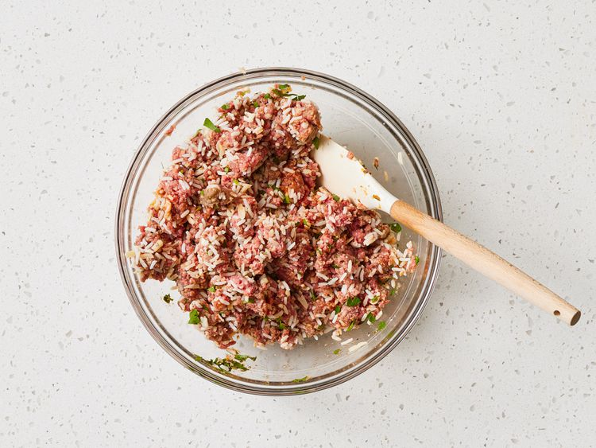
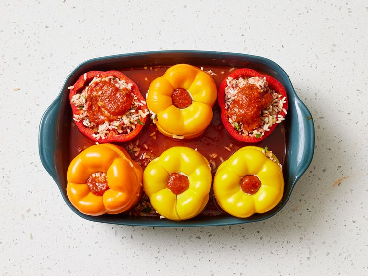
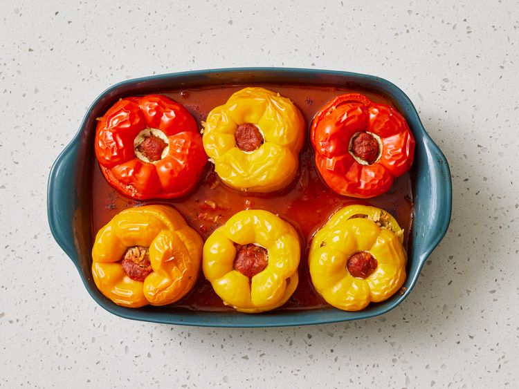
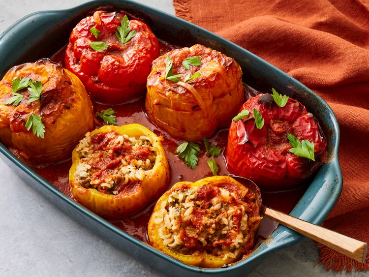

Home
Beef and Rice Stuffed Peppers
Beef and Rice Stuffed Pepper
About
These stuffed peppers with rice are worth a try! Ninety-four percent of all stuffed bell peppers are made because there's leftover rice around. You can adjust this recipe in many different ways: the herbs, the meat, etc. Any ground meat works: lamb, pork, or an equal mixture of sausage and beef is fantastic. I used lean beef, but I recommend trying 1 pound beef with 1/2 pound pork sausage.
Ingredients
- 6 bell peppers, any color
- 3 cups chunky tomato sauce, divided
- ½ onion, very thinly sliced
- ½ cup beef broth
- ¼ teaspoon red pepper flakes
- 1 ½ pounds lean ground beef
- 1 ½ cups cooked rice
- ½ cup freshly shredded Parmigiano-Reggiano cheese
- ¼ cup chopped fresh flat-leaf parsley
- 4 cloves garlic, minced
- 2 teaspoons salt or to taste
- ½ teaspoon freshly ground black pepper
- 1 tablespoon chopped fresh flat-leaf parsley, divided
Directions
- Gather all ingredients. Preheat the oven to 375 degrees F (190 degrees C).

- Slice peppers 1/2-inch from the top; cut out stems and set aside to use as tops. Cut core from the inside of peppers and strip away any seeds. Cut off a thin slice from the bottoms so peppers can stand upright. Poke about 4 tiny holes in the bottoms to let juices drain.

- Pour 2 ½ cups tomato sauce into a 9x13-inch baking dish. Add onion, beef broth, and red pepper flakes; spread out mixture evenly over the bottom.

- Set bell peppers upright in the dish.

- Combine ground beef, cooked rice, Parmigiano-Reggiano cheese, 2 tablespoons tomato sauce, 1/4 cup parsley, garlic, salt, and black pepper in a large mixing bowl.

- Lightly stuff peppers with meat mixture. Spread 1 tablespoon tomato sauce on top of each portion of stuffing; place reserved tops onto peppers. Lay a piece of parchment paper loosely on top of peppers and cover the dish tightly with foil. Place the dish on top of a baking sheet.

- Bake in the preheated oven until peppers have softened slightly, about 1 hour. Remove foil and parchment paper. Continue baking until meat filling is cooked through and peppers are soft, sweet, and tender, 20 to 30 more minutes.

- Sprinkle each pepper with 1/2 teaspoon parsley and drizzle with a spoonful of pan juices.
